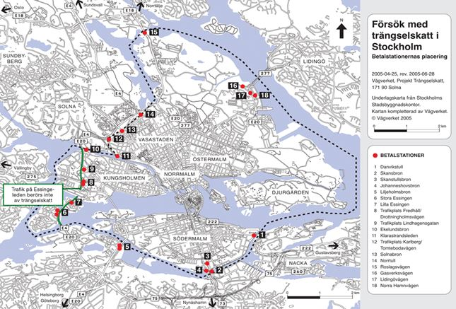
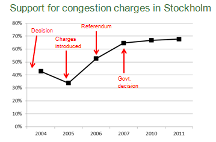
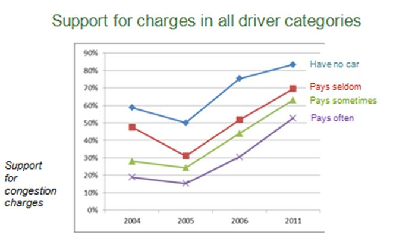

Stockholm Congestion Pricing
The Stockholm congestion charge is a tax levied on vehicles entering and exiting the inner city. After a seven-month trial, followed by a referendum, the charges were made permanent and the traffic reductions of 20% have held constant ever since. This case study features strong, ongoing impact data. It is a rare example of introducing then removing and then reintroducing an intervention. It speaks to the importance of timing referendums after rather than before trials or pilots, and to the dynamics of shifting public opinion. It also shows that congestion pricing can be popular, work well, and generate significant additional funds for municipalities. Designated a Landmark case study in 2013.
Background
The City of Stockholm is the largest of the municipalities within Stockholm County, an area consisting of 25 municipalities with a total population of about two million.
Stockholm was built on a harbour, bordered on all sides by lakes, which meant that most commuters into the city had to cross very congested bridges. Despite a good public transportation system and a relatively small population, Stockholm's traffic congestion was on par with that of London or Paris.
In 2006, the county of Stockholm had nearly 2,000,000 residents, of which almost half a million lived in the inner city. Of the approximately 320,000 people employed in the inner city, more than 210,000 of them commuted from outside the inner city.
Prior to the congestion charges, the cordon around the inner city was crossed by 530,000 vehicles and 800,000 transit passengers each day.

Setting Objectives
The primary objectives of the system were to reduce congestion, increase accessibility and improve the environment.
The purpose of the trial period (see below) was to test whether the overall efficiency of the city's traffic system could be enhanced by congestion charges. Its objectives were to:
- Reduce traffic volumes on the busiest roads by 10-15%
- Improve traffic flow on streets and roads
- Reduce emissions harmful to human health
- Improve the urban environment
- Provide more resources for public transport.
Getting Informed
The theoretical case for congestion charging had been established many years before and the idea had been hotly debated in Stockholm since the early 1990s.
Barriers
The main barriers to congestion charging were public and political opposition. The Mayor of Stockholm, for example, made a campaign promise not to introduce congestion charges; one political leader said at the time that congestion charging was "the most expensive way ever devised to commit political suicide."
Many feared that:
- License plate numbers would be misidentified
- People would not know of the need to pay or how to pay the charge, resulting in court appeals or refusals to pay.
- The system would favor wealthier, inner city residents and punish lower-income people living outside the city.
Despite these objections, a trial period was demanded by Sweden's Green Party during the 2002 federal election in exchange for its support for a national social-democratic government.
Segmenting by primary motivation
Stockholm used regression analysis to study survey responses regarding people’s attitudes towards climate, congestion and congestion pricing. It found two main groups of citizens. One group (the environmental group) primarily wanted to decrease traffic for environmental reasons – to mitigate climate change and improve local air quality. The other group (the transport efficiency group) focused more on congestion reduction, increased allocation efficiency, and so on. These seemed to be two distinct groups, so the key to getting public support was making sure that there was support from both of these groups.
Traffic Forecasting
Between March 2003 and February 2004, Transek, a small research consultancy hired by the Swedish Road Administration, researched, designed and planned the system. Transek tested multiple traffic forecasting models to determine how such charges would impact, among other things, public transit, traffic congestion and air quality. Most models predicted a traffic decrease of about 16%.
There was no room on any of the city's bridges to build toll booths, so the idea of individual vehicle transponders linked directly to bank accounts was proposed.
Delivering the Program
The system design was simple. It would consist of a single charging cordon around the inner city with various control points. The same amount of money would be charged at all points of entry, in both directions, and for both morning and afternoon peak periods. (Financial incentives / disincentives)
Trial period (pilot)
The system was tested from January to July 2006. The year before—to accommodate an expected increase in public transit use—the city had extended its public transit services, purchased new buses and increased its park-and-ride capacity.
On the very first day, the impact was obvious—20% of Stockholm's inner city traffic simply "disappeared." People had switched their travel habits—either choosing different times, destinations or modes, or opting not to make those trips at all. That same reduction would continue and remain steady throughout the seven-month trial.
Once the trial was completed, the charges were temporarily abolished and traffic congestion returned to almost pre-trial levels. Referenda to keep or abolish the charges were held in Stockholm and 14 of the 25 neighbouring municipalities, resulting in a narrow majority (53%) in favour of keeping the charges.
Full-scale system
The permanent system was restarted in August 2007. The Stockholm congestion charging system consisted of a toll cordon around the inner city, thereby reducing traffic through the bottlenecks located at the arterials leading into the inner city. The area encompasses the entire Stockholm city centre.
Eighteen unmanned electronic control points were established at all entrances into the cordon and the tax was applied on both the entry and exit of the area.

The cost of passing the cordon, in any direction, on weekdays was:
- €2 (~$2.90 CAD) during peak hours (7:30-8:30 am / 4-5:30 pm)
- €1.5 (~$2.20 CAD) 30 minutes before and after the peak periods, and
- €1 ($1.45 CAD) during the rest of the period 6:30 am to 6:30 pm.
The total charge per day was capped at €6 (~$8.70 CAD). There was no charge for evenings, weekends or holidays, and exemptions were given for emergency, transit and other government vehicles, as well as for those with disabled parking permits. (Financial incentives / disincentives)
A tag and beacon system was initially used. Each vehicle was equipped with a transponder that registered the vehicle's passing. For vehicles without a transponder, license plates were photographed using automatic number plate recognition (ANPR) technology and cross-referenced with Sweden's National Vehicle Registry to record the charge.
It had been anticipated that the ANPR identification rate would be about 50-60%, but after making some improvements to the system, the identification rate was actually about 97%. Due to this high degree of efficiency, the transponder system was abolished in 2008.
Thanks to the successful trial period public support for the charges increased, eventually reaching about 70% support in 2011. (Building motivation over time)
Financing the Program
Funding was provided by the National Transportation Agency. The system cost roughly $215 million CAD to install, although the National Transportation Agency says that if it had to do it a second time they probably could build it for less than half that cost. It takes $10 million CAD a year to operate. Average annual revenues are about $107 million CAD, giving the system a simple payback of about two years.
Measuring Achievements
The evaluation was divided into three different levels:
- A comprehensive evaluation, consisting of more than 30 different evaluation projects. This level was designed as a comparison between the before (spring and autumn 2005) and during (spring 2006) periods.
- Selected monthly indicators to monitor changes over time.
- The "go live" evaluation, which showed the effects directly after the introduction of the congestion charges.
The comprehensive evaluation included a data analysis of travel patterns and road traffic, as well as the system's quantitative effects on: public transport, pedestrian and bicycling traffic, parking, road safety, air quality, noise, trade, regional economy, Stockholm citizens’ experience of the urban environment, distribution hauling, impact for taxis and courier services, and attitudes towards congestion taxes.
Attribution of the observed impacts to the pricing policy was strengthened because the congestion charges were introduced, then abolished right before the referendum, then later reintroduced (Reversal Design.)
Feedback
During the trial, the results of the pricing system were immediately apparent. Photographs of one of the most congested arterials appeared in Stockholm's major media showing traffic the day before the trial and the first day of the trial. Thousands of vehicles had "disappeared" from the roads. Such a vivid example helped negate the opposition's assertions that the system wouldn't work and helped to turn people's opinions in favour of keeping the charges.

The program used vivid images in mass media to highlight the congestion reductions.
Results
Traffic decreased by about 20% across the toll cordon and congestion decreased by 30 – 50%.
Traffic Changes
Traffic decreased by about 20% across the toll cordon, or the equivalent of 100,000 passages over the charge cordon during the congestion period each day. The decrease led to congestion reductions of about 30-50% on the arterials, and inner city emission decreases of between 10% and 14%. Travel time variability also decreased significantly. For example, if you need to choose your departure time in order to be on time for an important meeting, then you need to choose your departure time with respect to the maximum travel time rather than the mean one. The decrease in travel time variability was as much appreciated by the population as the reduced average travel times.
About half of the “disappearing” drivers changed to transit, the rest to other alternatives such as different departure times and destinations, fewer trips, etc.
Attribution of the observed impacts to the pricing policy was strengthened because the congestion charges were introduced, abolished right before the referendum, then later reintroduced (Reversal Design.) In the following table, the red bars represent the time periods during which congestion pricing was in place, and the blue bars indicate when it wasn’t in place. Traffic levels dropped immediately during the trial period, returned towards initial levels once the pricing was abolished, then dropped again and stayed roughly level once congestion pricing was reintroduced.

Reversal Design: traffic levels dropped immediately during the trial period, returned towards initial levels once congestion pricing was abolished, then dropped again and stayed roughly level once congestion pricing was reintroduced.
Public Support
The Royal Institute of Technology conducted repeated surveys of public attitudes. Public support for the charges was lowest just before the trial, increased dramatically once the trial began and has remained consistently high at roughly 70% thereafter. This is pattern that has also been seen in London, Oslo, Singapore, Milan and Rome. People are very negative at first, but that shifts once they see the benefits and get used to things.

Public support for the charges was lowest just before the trial, increased dramatically once the trial began and has remained consistently high since.

All driver categories supported the congestion charges after the trial period.
The net social benefit of the congestion charges was pegged at about €65 million/year (~$94 million CAD). Beyond the revenues provided by the charges, social benefits were also measured in terms of the value of
- Shorter and more reliable travel times
- Lower GHG emissions
- Improved health and environmental impacts
- Increased traffic safety, and
- Increased public transit revenues.
None of the objections that people had to the system materialized. ANPR technology eliminated false plate identifications and people understood how to pay the charges. Calculations also showed that lower income people were not disproportionately affected; in fact, just the opposite was true. Wealthier people living in the inner city paid more in congestion charges than residents in any other geographic area.
Further details: A cost-benefit analysis is available in Eliasson, J. (2009) A cost-benefit analysis of the Stockholm congestion charging system. Transportation Research A 43(4), pp. 468-480. doi:10.1016/j.tra.2008.11.014.
Notes
Drivers responded to the congestion charge roughly as predicted by transport forecasting models. The main barrier was public and political opposition. There were several reasons for the huge swing in opinion. Some the more commonly mentioned are:
- The technical system worked. That the system worked from the start was of course a key factor. The number of misidentifications was extremely low, and from users’ perspectives, everything worked seamlessly. Further, the Road Administration made great efforts to develop a customer-friendly system.
- The information campaign worked. Apparently, people knew what to do. Anticipated problems with people who did not know that they should pay, or did not know how to pay, did not materialise. Moreover, the anticipated problem of protests in the form of large number of court appeals or refusals to pay was never a problem. in spite of a lot of talk before the trial about “civil disobedience” in the form of refusal to pay or appealing to court.
- Visible congestion reduction. The improvements in travel times and the urban environment were visible right from the start. The astonishment of seeing almost empty streets during rush hours, in particular during the first months, cannot be stressed enough. After that, the potency of road pricing had been overwhelmingly proved, and the negative arguments shifted from “it won’t work” to other, often more constructive, arguments.
- Extensive and scientific evaluation. Even if effects were visible, one should stress the importance of being able to supply media with hard figures about the reduction of traffic volumes and congestion. Especially when the debate recovered somewhat from the initial shock caused by the enormous initial effects, it was extremely important to have professional, independent researchers and experts, coming from different backgrounds and organisations, being able to explain and evaluate what was happening. The size of the evaluation was itself an important factor: so many experts and researchers were involved in one way or another that it was impossible to wave it away.
- Clear objectives. The system had clear and measurable objectives – reducing congestion and improving the environment in the inner city – and the system was visibly designed with these objectives in mind. Moreover, the objectives were fulfilled.
- Having to pay for something that used to be free is never popular, and some people will be worse off – especially in the short term, until new travelling habits become gradually adopted. These sacrifices have to be weighed against the positive effects of the charges on the environment and accessibility, and the possibility to use the revenues for necessary investments. Among transport researchers, it is probably not a controversial opinion that congestion charging, all things considered, is a useful and probably even necessary way of ensuring that a big city’s transport systems continue to work reasonably efficiently. What is unique about the Stockholm trial is that this view appears to have taken root outside this relatively small circle as well.
The congestion charges have been subject to extensive scientific analyses. A comprehensive evaluation program with over 30 different projects were carried out, covering all kinds of effects.
Good overviews include:
Eliasson, J., Hultkrantz, L., Nerhagen, L., Smidfelt-Rosqvist, L. (2009) The Stockholm congestion-charging trial 2006: Overview of the effects. Transportation Research A 43, p. 240-250. doi:10.1016/j.tra.2008.09.007
Börjesson, M., Eliasson, J., Hugosson, M. B., & Brundell-Freij, K. (2012). The Stockholm congestion charges — 5 years on. Effects, acceptability and lessons learnt. Transport Policy, 20(0), 1-12. doi:10.1016/j.tranpol.2011.11.001
Eliasson, J. (2008) Lessons from the Stockholm congestion charging trial. Transport Policy 15(6), p. 395-404. doi:10.1016/j.tranpol.2008.12.004
Landmark Designation
The program described in this case study was designated in 2013.
Designation as a Landmark (best practice) case study through our peer selection process recognizes programs and social marketing approaches considered to be among the most successful in the world. They are nominated through an open nomination process and by our peer-selection panels and Tools of Change staff, and then scored by the selection panels based on impact, innovation, replicability and adaptability.
The panel that designated this program consisted of:
- Mark Dessauer, Blue Cross Blue Shield of NC Foundation
- Jacky Kennedy, Green Communities Canada
- Ryan Lanyon, City of Toronto
- Nathalie Lapointe, Federation of Canadian Municipalities
- Patricia Lucy, Translink
- David Levinger, Mobility Education Foundation
- Geoff Noxon, Noxon Associates
- Chuck Wilsker, U.S. Telework Coalition
- Phil Winters, CUTR and the University of South Florida
This case study was written in 2014 by Jay Kassirer and Sharon Boddy.